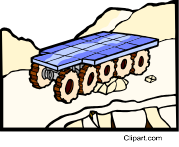

9. A robotic rover on the surface of Mars needs to make a small journey to a
new site to analyze rock samples.
To make this journey, the rover’s
motor exerts a force of 2.50 kN for 2.00 minutes to move a distance
of 182 m.
Robotic Rover

What is the power of the robotic
rover’s motor during this journey?
A) 3.79 W
B) 228 W
C) 3 790 W
D) 228 000 W